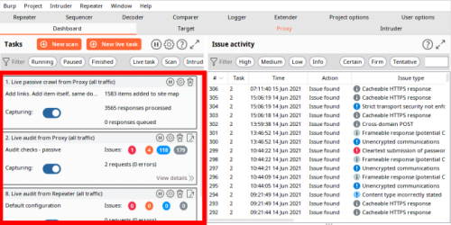

Concurrent Scans & Resource Pool
Concurrent Scans
We can have multiple tasks active at the same time.
Check the Dashboard

Resource Pools
"Resource Pools" allow determining how resources will be allocated to tasks